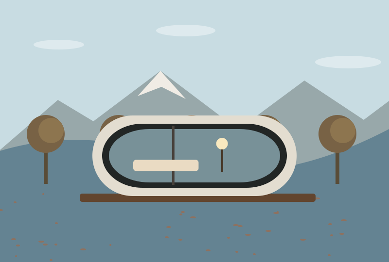

دو نفرکپسول غروب
برای دو نفر با وانِ رو به غروب.

کپسولهای خلوت روی فلاتی سنگی، با چشماندازی باز تا آخرین نور غروب.
به دنیای آرام کارست خوش آمدی. از پنجرهٔ کپسولت، دریایی از سنگ و درخت و آسمان پیداست. اینجا فرصت داری با خودت خلوت کنی و شبی زیر ستارهها را به یاد بسپاری.


دو نفربرای دو نفر با وانِ رو به غروب.

دو نفربا سقف شیشهای بالای تخت.

چهار نفربرای چهار مهمان با شومینه.
مسیر دسترسی در فصل گرم جادهٔ کوهستانی است. برای زمستان، شرایط مسیر را پیش از حرکت بررسی کن.
در کپسولها آب گرم و روشنایی در نظر گرفته شده و تراس رو به آسمان باز است.
برای همراهی حیوان خانگی کپسول صخره را انتخاب کن و در درخواستت بنویس.
کپسول و تاریخ پیشنهادی را بنویس و فایل درخواستت را بردار.
نقشهٔ راهنمای مجموعه
مسیر سنگی از کنار آبراه میگذرد و به کپسولها میرسد. انتخاب این قالب
انتخاب این قالب